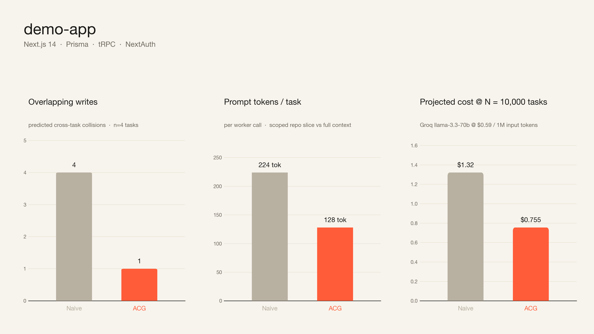
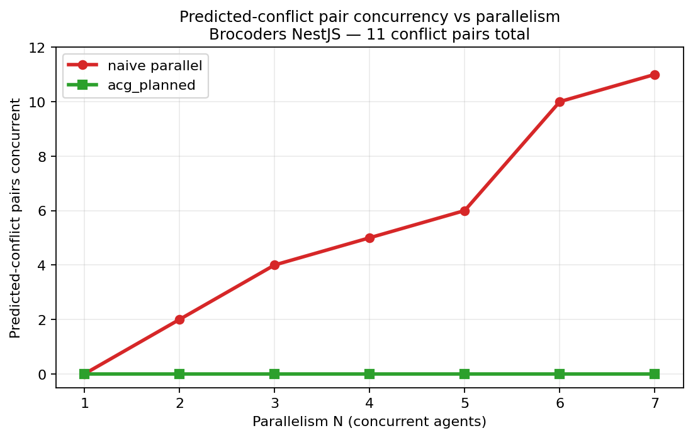
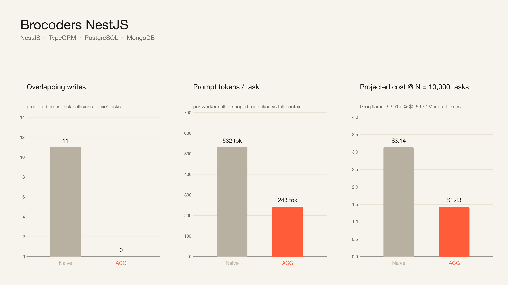
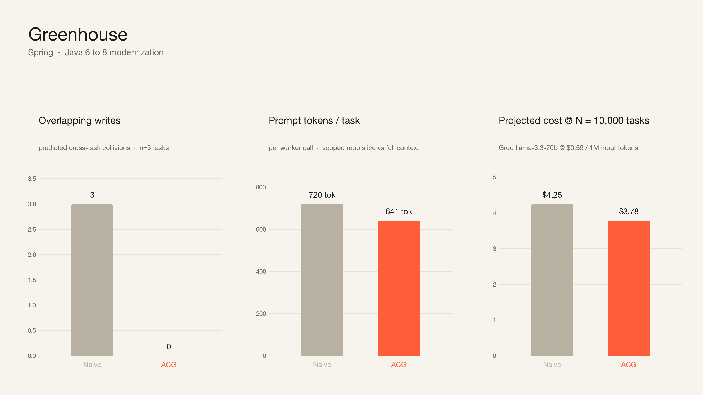

Two schools.
One question.
What stops two agents from writing the same file?
Scroll
Today's landscape01 / 13
Centralized
orchestrator.
Hub-and-spoke. Polls, dispatches, repastes state.
Devin "Manage Devins"
LangGraph supervisor
OpenAI Swarm
School A · centralized02 / 13
Peer-to-peer
/ CRDT.
No central authority. Every agent observes every other.
CodeCRDT
OpenCode multi-agent
Cursor handoffs
MetaGPT
School B · peer-to-peer03 / 13
Both ask
at runtime.
Every round. Every agent. Re-derived from scratch — and paid for in tokens.
So we measured the bill.
Same question · different topology04 / 13
ACG.
package-lock.json
for parallel coding agents.
Move the conflict question from runtime to compile time.
Agent Context Graph05 / 13
Compile once.
Run in lanes.
Compile time · deterministic + 1 LLM/task
repo + tasks.json
→
scan
→
indexers
→
predictor
→
solver
→
agent_lock.json
Run time · parallel groups · validator-gated · no peer comms
agent_lock.json
→
W1
W2
W3
W4
validate_write (glob · 0/1/2)
→
repo
Compile · run · validate06 / 13
agent_lock.json
Per task: predicted_writes, allowed_paths, depends_on.
- · Reviewable in PR
- · Diffable. Versionable. Signable.
- · Strict schema · Pydantic v2
// agent_lock.json — abbreviated
{
"version": "1.0",
"repo": { root, commit, languages },
"tasks": [
{
"id": "oauth",
"predicted_writes": [...],
"allowed_paths": [
"src/server/auth/**",
".env.example"
],
"depends_on": []
}
],
"execution_plan": {
"groups": [
{ id: 1, tasks: [oauth, settings], type: "parallel" },
{ id: 2, tasks: [billing], waits_for: [1] },
{ id: 3, tasks: [tests], waits_for: [2] }
]
}
}
Committable artifact07 / 13
Eight layers.
One LLM call per task.
L1
Static analysis
Repo graph + framework / PageRank / BM25 / co-change.
Deterministic
L2
Predictor
7 seeds + LLM rerank. Falls back to seeds on error.
1 LLM / task
L3
Compiler
Glob broadening, test heuristic, allowed_paths.
Deterministic
L4
Solver
Conflict detection → DAG → parallel/serial groups.
Pure
L5
Lockfile
agent_lock.json — strict schema, version-pinned.
Committable
L6
Runtime
Async orchestrator + workers. Concurrency lanes.
Validator-gated
L7
Enforcement
Glob match. Pre-emption (Cascade) or post-hoc (Devin).
No LLM
L8
Integration
FastMCP server (4 tools) + CLI (10 commands).
MCP · CLI
Eight layers · one LLM call per task08 / 13
demo-app.

Next.js 14 · Prisma · tRPC · NextAuth09 / 13
Conflicts scale with parallelism.
ACG stays at zero.

Mechanical from lockfile · lower is safer10 / 13
Brocoders NestJS.

NestJS · TypeORM · PostgreSQL · MongoDB11 / 13
Greenhouse.

Spring · Java 6 → 8 modernization12 / 13
Static contract.
Committable artifact.
Provider-agnostic enforcement.
One file. One review. N agents in their own lanes.
End · agent_lock.json for parallel coding agents13 / 13